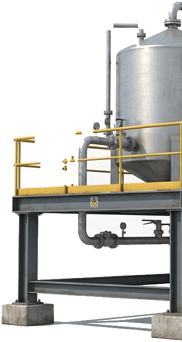
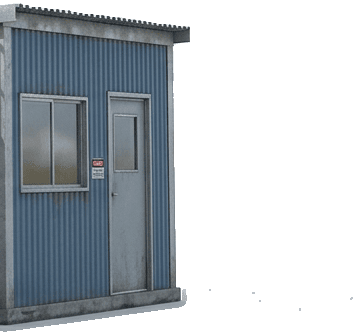

One Reliable Partner for Industrial Engineering, Procurement & Corporate Solutions.
Sazvar provides integrated B2B solutions across procurement, civil construction, heavy logistics, mechanical engineering, and corporate operations. From sourcing specialized equipment and managing plant shutdowns to executing institutional construction and bulk material transportation, we deliver end-to-end project success through one single, accountable team.

We Engineer And Build The Site.
We Source And Move Every Shipment.
And Keep The Business Running.




Core Service Lines
Dedicated Coordinator Per Project
Growth Roadmap
Layers Between You and Suppliers
This page only exists so we can look at the new hero side-by-side with the current homepage. Once you're happy with the direction (colours, headline, stats, scroll story), I'll move this onto index.html properly.